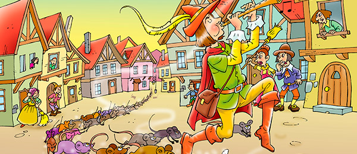
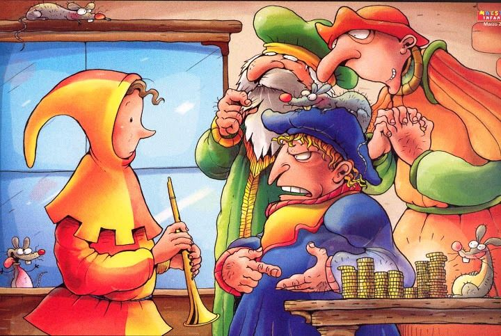
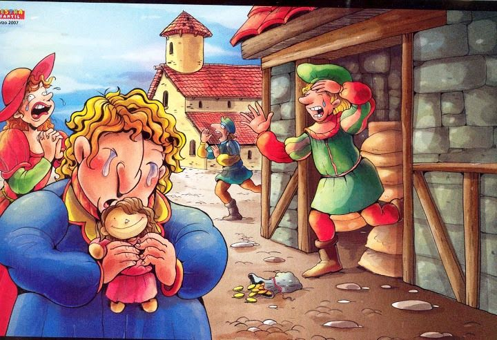

El Flautista de Hamelin

Érase una vez un precioso pueblo llamado
Hamelin. En él se respiraba aire puro todo el año puesto que estaba situado en un valle, en plena naturaleza. Las casas salpicaban el paisaje rodeadas de altas montañas y muy cerca pasaba un río en el que sus habitantes solían pescar y bañarse cuando hacía buen tiempo. Siempre había alimentos de sobra para todos, ya que las familias criaban ganado y plantaban cereales para hacer panes y pasteles todo el año. Se puede decir que Hamelin era un pueblo donde la gente era feliz.– Se hace saber que se recompensará con un saco demonedas de oro al valiente que consiga liberarnos de esta pesadilla.
– Señor, vengo a ayudarles. Yo limpiaré esta ciudad de ratones y todo volverá a la normalidad.

Sin esperar ni un minuto más, se dio la vuelta y comenzó a tocar la flauta. La melodía era dulce y maravillosa. Los lugareños se miraron sin entender nada, pero más sorprendidos se quedaron cuando la plaza empezó a llenarse de ratones. Miles de ellos rodearon al músico y de manera casi mágica, se quedaron pasmados al escuchar el sonido que se colaba por sus orejas.– Vengo a por las monedas de oro que me corresponden – le dijo al alcalde – He cumplido mi palabra y ahora usted debe cumplir con la suya.
– ¡Ja ja ja ja! ¿Estás loco? ¿Crees que voy a pagarte un saco repleto de monedas de oro por sólo tocar la flauta? ¡Vete ahora mismo de aquí y no vuelvas nunca más, jovenzuelo!
– ¡Eh, tú, despierta! – dijo el alcalde, en representación de todos – ¡Devuélvenos a nuestros chiquillos! Los queremos mucho y estamos desolados sin ellos.
–¡Me has mentido! Prometiste un saco de monedas de oro a quien os librara de la plaga de ratones y yo lo hice gustoso. Me merezco la recompensa, pero tu avaricia no tiene límites y ahí tienes tu merecido.

– Lo siento mucho, joven. Me comporté como un estúpido y un ingrato. He aprendido la lección. Toma, aquí tienes el doble de monedas de las que te había prometido. Espero que esto sirva para que comprendas que realmente me siento muy arrepentido.
– Está bien… Acepto tus disculpas y la recompensa. Espero que de ahora en adelante, seas fiel a tu palabra y cumplas siempre las promesas.